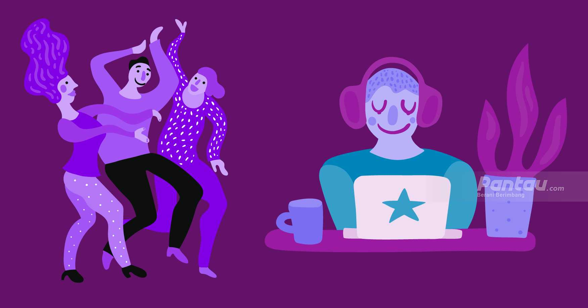
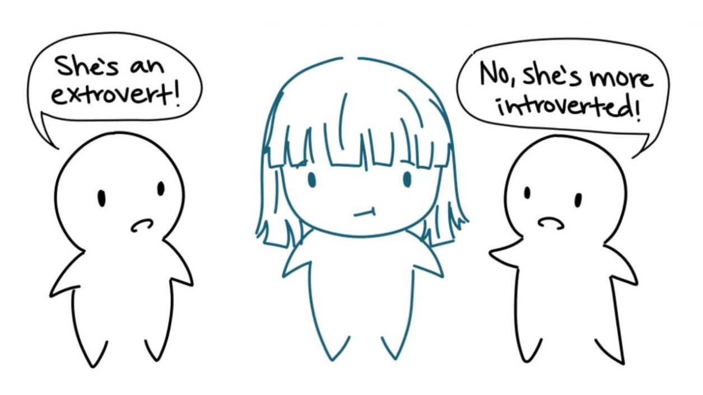

Introvert, Ekstrovert, Ambivert: Apa Definisi dan Perbedaannya?
1. Introvert
Konsep introvert dan ekstrovert pertama kali dicetuskan oleh psikiater asal Swiss bernama Carl Jung. Ia percaya bahwa beberapa orang bisa mendapatkan energi dari dunia eksternal (ekstrovert) dan lainnya mendapatkan energi dari dunia internal (introvert).
Definisi introvert sendiri adalah seseorang yang bisa menyerap energi ketika sedang sendiri memilih ketenangan untuk refleksi. Mereka tidak menolak menghabiskan waktu bersama satu atau dua orang terdekatnya.
Mereka kadang membutuhkan waktu menyendiri untuk memulihkan energinya setelah berinteraksi di lingkungan sosialnya. Mereka juga cenderung tidak suka omongan basa-basi, dan lebih memilih percakapan yang lebih berarti.
- Berikut ciri-ciri kepribadian introvert lainnya yang perlu kalian ketahui:
- Memilih kerja sendiri. Jika kalian merasa kerja kelompok terlalu berlebihan, tandanya kalian adalah seorang introvert. Orang introvert biasanya bekerja lebih efektif ketika mereka bekerja sendiri karena bisa lebih fokus.
- Introspektif dan ingin tahu. Sebelum merencanakan sesuatu, biasanya seorang introvert memilih untuk memikirkannya secara matang terlebih dahulu.
Cara berpikir orang introvert memang lebih internal. Pola berpikir ini yang mendorong mereka untuk banyak melakukan riset dan refleksi diri sendiri.
2. Ekstrovert
Ekstrovert sering didefinisikan sebagai "life of the party". Mereka sangat tertarik dengan interaksi sosial, bahkan bisa mengambil energi dari situasi tersebut.
Ahli saraf mengatakan ekstrovert lebih responsif terhadap stimulasi dari luar karena otak mereka mengeluarkan lebih banyak dopamine di tengah situasi sosial. Dopamine sendiri adalah senyawa kimia di otak yang menyebabkan rasa senang dan puas.
- Berikut ciri-ciri kepribadian ekstrovert lainnya:
- Tidak suka menyendiri. Ekstrovert tidak suka menyendiri karena mereka merasa keadaan tersebut justru menguras energi mereka. Mereka mengisi ulang energi justru dengan berada di tengah orang banyak.
- Senang berada di tengah orang banyak. Beda dengan introvert, ekstrovert justru merasa nyaman berkumpul dalam kelompok besar. Mereka bahkan tidak segan menjadi pemimpin di kerja kelompok dan kegiatan sosial setelah kerja.
- Memiliki banyak teman. Orang ekstrovert lebih mudah mendapatkan teman baru karena mereka merasa nyaman dengan energi orang lain. Mereka juga memiliki jaringan sosial yang luas dengan banyak kenalan.
- Outgoing dan optimis. Ekstrovert kadang disebut sebagai orang yang bahagia, positif, ceria, dan ramah. Mereka jarang terlalu memikirkan kesulitan dalam hidup.
- Tidak khawatir dengan risiko. Orang ekstrovert kadang suka melakukan tindakan yang berisiko. Jika tindakan tersebut berhasil dan risikonya terbayarkan, mereka akan merasa sangat puas.
3. Ambivert
Sesungguhnya introvert dan ekstrovert adalah sebuah spektrum. Artinya, tidak semua orang 100% memiliki kepribadian introvert atau ekstrovert, tapi justru berada di tengah-tengah.
Kalian bisa saja berada lebih dekat dengan sisi introvert atau ekstrovert. Jika kalian merasa tidak cocok dengan deskripsi kedua kepribadian tersebut, kemungkinan besar kalian adalah seorang ambivert.
Kepribadian ambivert bisa condong ke sisi introvert atau ekstrovert tergantung pada situasi yang mereka hadapi. Berikut ciri-ciri kepribadian ambivert yang perlu kalian ketahui:
- Pendengar yang baik. Ekstrovert mungkin lebih banyak bicara dan introvert lebih banyak melihat dan mendengar. Tapi ambivert tahu kapan harus bicara dan kapan harus menjadi pendengar
- Bisa mengatur perilaku. Kepribadian ambivert bisa menyesuaikan perilakunya tergantung dari orang dan lingkungan di sekelilingnya.
- Merasa nyaman di situasi sosial, tapi juga menghargai waktu menyendiri. Jika mendapat undangan pesta dari temannya, seorang ambivert mungkin akan memikirkan pro dan kontra dari acara tersebut. Mereka bisa saja memilih untuk pergi atau tidak.
- Memiliki empati yang tinggi. Kepribadian ambivert bisa menjadi pendengar yang baik dan mengerti situasi seseorang. Jika seorang temannya mengalami masalah, ambivert akan mendengar dan memberi pertanyaan mendalam untuk membantu menyelesaikan masalah.
- Bisa menyediakan keseimbangan. Di situasi sosial, seorang ambivert bisa memberikan keseimbangan yang diperlukan. Mereka bisa saja menjadi orang pertama yang memecahkan kesunyian dan membuat orang lain yang lebih introvert menjadi lebih nyaman untuk berbicara.
Nah itu dia teman-teman definisi introvert, ekstrovert, dan ambivert. Kalau kalian yang mana ya?
Kalian masih binggung kalian yang mana? Jika kalian bisa binggung kalian bisa pencet tombol di bawah ini untuk melakukan test secara langsung!
Test Keperibadian introvert, ekstrovert, dan ambivert
Aturan testnya : pilih 1 untuk ya pilih 2 untuk mungkin pilih 3 untuk tidak
1.Apa kamu senang terlibat dalam proyek yang menuntut kecepatan?
2.Ketika menaiki tangga apakah biasanya menaiki dua anak tangga sekaligus?
3.Apakah lalu lintas macet sering membuat anda marah?
?
4.Ketika makan bersama apakah kamu selesai lebih cepat?
?
5.Apa kamu senang menagatur kegiatan waktu luang?
?
6.Apa kamu biasa bangun pagi dengan penuh semangat dan sipa menjalani aktivitas?
7.Apa kamu sering bergegas dari suatu kegiatan ke kegiatan lain tanpa berhenti untuk rileks?
?
8.Ketika sedang berjalan dengan orang lain, apakah mereka sulit mengimbangi kecepatan mu?
?
9.Apa kamu tidak sabaran untuk menunggu?
?
10.Apa kamu merasa orang lain lebih supel dari kamu?
?
11.Bila melihat orang yang supel apa membuat anda khawatir?
?
12.Apa kamu tidak bisa diganggu ketika melakukan sesuatu?
?
13.Apa malas berkenalan dengan orang baru?
?
14.Apa kamu suka berdiam diruangan dan menikmati waktu pribadi mu?
?
15.Apa kamu suka merasa cemas tanpa alasan?
?
16.Apakah kamu cenderung diam bila sedang diskusi?
?


Popular Post